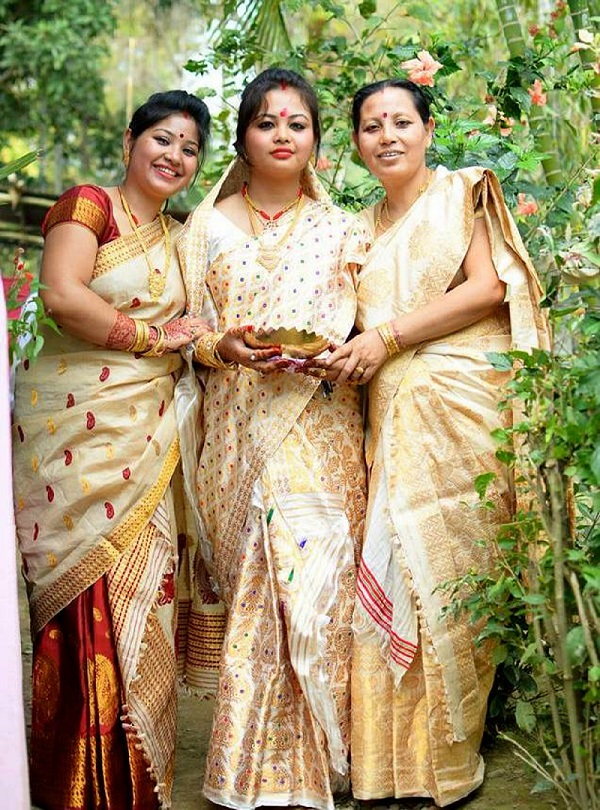
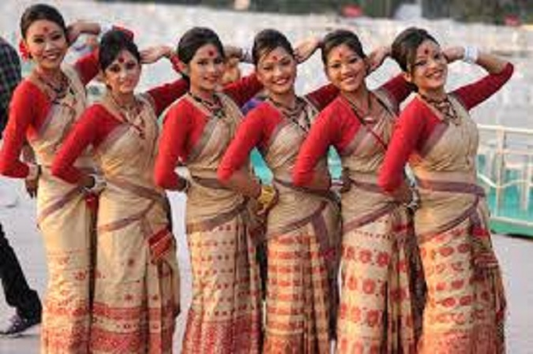
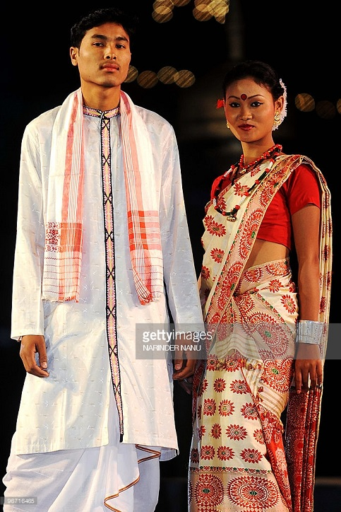
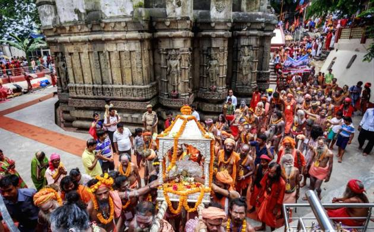
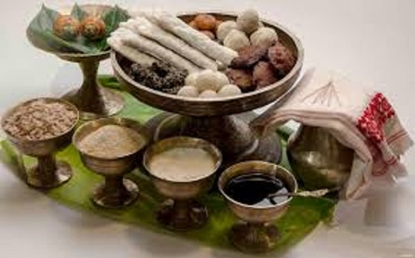
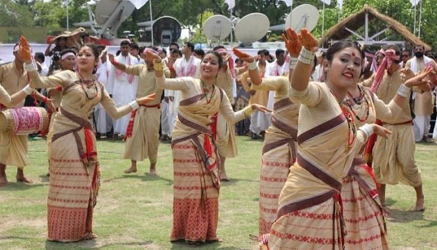

Assam
- Home
- Food


- Fashion
  
- Festival
- Bohag Bihu
- Magh Bihu
- Ambubachi Mela

Ambubachi Mela
The Ambubachi Mela is celebrated in the capital city of Guwahati, in the northeastern state of Assam in India. The Ambubachi Mela is the most important festival of the Kamakhya Temple of Guwahati. The Ambubachi is a ritual of asceses observed with “Tantrik means”. It is believed that the presiding goddess of the temple, Devi Kamakhya, the Mother Shakti, goes through her annual cycle of menstruation during this time stretch.
Magh Bihu
The Magh Bihu festival of Assam is celebrated with great fervor by its entire populace. Characterized by merry making and feasting, this festival marks the end of the harvesting season when there is abundance of everything. This is the time when the hard working agricultural folk of the state sit down to reap the benefits of their labor. However, it must be pointed out that the Magh Bihu festival is not limited to the agricultural pockets of the state. Right from the smallest of villages to the big towns and cities of Assam, people celebrate this festival with great joy, though it must be mentioned that the mode of celebration differs from the villages to the cities. - Ambubachi Mela

Bohag Bihu
The Bihu Festivals is one of the most popular festivals of Assam, a north-eastern state in India. The Bihus are the most important festivals of Assam,which are celebrated each year with loads of fun and abundance. Of the three Bihu Festivals held in Assam, the Rongali Bihu Festival is celebrated in Spring. The Assamese people, irrespective of caste, creed, faith, religion and belief, take part in the Bihu Festival. - Magh Bihu
- Bohag Bihu